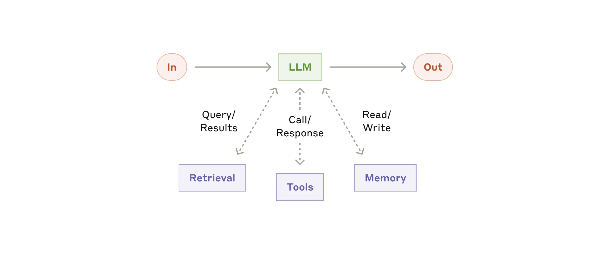

构建高效AI代理：Anthropic的实用指南
译文 AI 逐段翻译
注意：本文描述的许多工具情况自2024年12月以来已发生变化。有关我们当前的方法，请参阅我们如何构建Claude托管代理 以及托管代理文档。在过去的两年里，我们与数十个跨行业的团队合作，构建大型语言模型（LLM）代理。最成功的实现始终不是使用复杂的框架或专门的库。相反，他们使用简单、可组合的模式进行构建。
在这篇文章中，我们分享了从客户合作和自我构建代理中学到的经验，并为开发者提供关于构建有效代理的实用建议。
什么是代理？
“代理”可以有多种定义。一些客户将代理定义为完全自主的系统，它们可以在较长时期内独立运行，并使用各种工具完成复杂任务。其他人用这个词来描述更遵循预定义工作流的规范性实现。在Anthropic，我们将所有这些变体归类为代理系统，但在架构上区分了工作流和代理：
- 工作流是通过预定义代码路径编排LLM和工具的系统。
- 代理则是LLM动态指导自身流程和工具使用的系统，保持对如何完成任务的掌控。
下面，我们将详细探讨这两类代理系统。在附录1（“实践中的代理”）中，我们描述了客户发现使用这类系统特别有价值的两个领域。
何时（以及何时不）使用代理
在使用LLM构建应用程序时，我们建议找到最简单的解决方案，只有在需要时才增加复杂性。这可能意味着根本不构建代理系统。代理系统通常以延迟和成本换取更好的任务性能，您应该考虑这种权衡是否有意义。
当需要更多复杂性时，工作流为定义明确的任务提供可预测性和一致性，而代理在需要灵活性和模型驱动决策的情况下是更好的选择。然而，对于许多应用来说，优化单次LLM调用并利用检索和上下文示例通常就足够了。
何时以及如何使用框架
有许多框架使得实现代理系统更容易，包括：
- 该Claude Agent SDK；
- AWS的Strands Agents SDK；
- Rivet，一个拖放式GUI LLM工作流构建器；以及
- Vellum，另一个用于构建和测试复杂工作流的GUI工具。
这些框架通过简化标准底层任务（如调用LLM、定义和解析工具、链式调用）让入门变得容易。然而，它们通常会增加额外的抽象层，可能掩盖底层的提示和响应，使调试变得更加困难。它们也可能诱使人们在不必要的情况下增加复杂性，而更简单的设置就足够了。
我们建议开发者直接使用LLM API：许多模式可以用几行代码实现。如果使用框架，请确保理解底层代码。对底层实现的不正确假设是客户错误的常见来源。
参见我们的cookbook获取一些示例实现。
构建模块、工作流和代理
在本节中，我们将探讨生产环境中常见的代理系统模式。我们将从基础构建模块——增强型LLM——开始，并逐步增加复杂性，从简单的组合工作流到自主代理。
构建模块：增强型LLM
代理系统的基本构建模块是增强了检索、工具和记忆等功能的LLM。我们当前的模型可以主动使用这些能力——生成自己的搜索查询、选择合适的工具，并决定保留哪些信息。

我们建议关注实现的两个关键方面：根据您的特定用例定制这些能力，并确保它们为您的LLM提供易于使用、文档清晰的接口。虽然实现这些增强的方法很多，但一种方法是通过我们最近发布的Model Context Protocol，它允许开发者通过简单的客户端实现来集成日益增长的第三方工具生态系统。
在本文其余部分，我们将假设每次LLM调用都具备这些增强能力。
工作流：提示链
提示链将任务分解为一系列步骤，每个LLM调用处理前一个调用的输出。您可以在任何中间步骤添加程序化检查（见下图中“网关”），以确保流程仍在正轨上。
何时使用此工作流：该工作流非常适合任务能够轻松且清晰地分解为固定子任务的情况。主要目标是通过使每个LLM调用成为更容易的任务，以延迟换取更高的准确性。
提示链有用的示例：
- 生成营销文案，然后将其翻译成另一种语言。
- 撰写文档大纲，检查大纲满足某些标准，然后根据大纲编写文档。
工作流：路由
路由将输入分类并引导到专门的后续任务。此工作流允许关注点分离，并构建更专门的提示。如果没有此工作流，优化一种输入可能损害其他输入的性能。
何时使用此工作流：路由适用于有不同类别且需要分别处理的复杂任务，并且可以准确进行分类（通过LLM或更传统的分类模型/算法）。
路由有用的示例：
- 将不同类型的客户服务查询（一般问题、退款请求、技术支持）引导到不同的下游流程、提示和工具中。
- 将简单/常见问题路由到较小、成本效益高的模型（如 Claude Haiku 4.5），将困难/不寻常的问题路由到功能更强的模型（如 Claude Sonnet 4.5），以优化性能。
工作流：并行化
LLM 有时可以同时处理任务，并以编程方式聚合其输出。这种工作流（即并行化）有两种关键变体：
- 分段：将任务分解为并行运行的独立子任务。
- 投票： 多次运行同一任务以获取多样化的输出。
何时使用此工作流： 当分割的子任务可以并行化以加快速度，或者需要多个视角或尝试以获得更高置信度的结果时，并行化是有效的。对于涉及多个考虑因素的复杂任务，当每个考虑因素由单独的 LLM 调用处理时，LLM 通常表现更好，从而可以专注于每个特定方面。
并行化有用的示例：
- 实施护栏时，一个模型实例处理用户查询，而另一个实例筛选不当内容或请求。这往往比让同一个 LLM 调用同时处理护栏和核心响应表现更好。
- 自动化评估以评估 LLM 性能，其中每个 LLM 调用评估模型在给定提示上的不同方面。
投票：
- 审查代码漏洞，多个不同的提示审查代码，如果发现问题则标记。
- 评估给定内容是否不当，多个提示评估不同方面或要求不同的投票阈值，以平衡误报和漏报。
工作流：编排器-工作者
在编排器-工作者工作流中，中央 LLM 动态分解任务，将其委派给工作者 LLM，并综合它们的结果。
何时使用此工作流： 此工作流非常适合无法预测所需子任务的复杂任务（例如，在编码中，需要更改的文件数量以及每个文件中更改的性质可能取决于任务）。虽然它在拓扑上相似，但与并行化的关键区别在于其灵活性——子任务不是预先定义的，而是由编排器根据特定输入确定的。
编排器-工作者有用的示例：
- 每次对多个文件进行复杂更改的编码产品。
- 涉及从多个来源收集和分析信息以获取可能相关信息的搜索任务。
工作流：评估器-优化器
在评估器-优化器工作流中，一个 LLM 调用生成响应，而另一个在循环中提供评估和反馈。
何时使用此工作流： 当我们有明确的评估标准，并且迭代改进提供可衡量的价值时，此工作流特别有效。两个合适的迹象是：首先，当人类表达其反馈时，LLM 响应可以明显改善；其次，LLM 可以提供此类反馈。这类似于人类作家在撰写精炼文档时可能经历的迭代写作过程。
评估器-优化器有用的示例：
- 文学翻译，其中存在翻译 LLM 可能一开始无法捕捉的细微差别，但评估 LLM 可以提供有用的批评。
- 复杂的搜索任务，需要多轮搜索和分析以收集全面信息，其中评估器决定是否需要进行进一步的搜索。
智能体
随着 LLM 在关键能力上的成熟，智能体正在生产中兴起——理解复杂输入、进行推理和规划、可靠地使用工具以及从错误中恢复。智能体以人工用户的命令或互动讨论开始其工作。一旦任务明确，智能体就独立计划和操作，可能返回人类以获取进一步信息或判断。在执行过程中，智能体在每个步骤从环境中获得“地面真相”（如工具调用结果或代码执行）以评估其进展至关重要。然后，智能体可以在检查点或遇到阻碍时暂停以获取人工反馈。任务通常在完成后终止，但也常见包括停止条件（如最大迭代次数）以保持控制。
智能体可以处理复杂的任务，但它们的实现通常很简单。它们通常只是基于环境反馈在循环中使用工具的 LLM。因此，设计工具集及其文档清晰且周到至关重要。我们在附录 2（“为您的工具进行提示工程”）中详细介绍了工具开发的最佳实践。
何时使用智能体： 智能体可用于开放式问题，其中难以或不可能预测所需步骤数，并且无法硬编码固定路径。LLM 可能会进行多轮操作，您必须对其决策有一定程度的信任。智能体的自主性使其非常适合在受信任的环境中扩展任务。
智能体的自主性意味着更高的成本，以及出现复合错误的可能性。我们建议在沙盒环境中进行广泛测试，并设置适当的护栏。
智能体有用的示例：
以下示例来自我们自己的实现：
- 一个编码智能体来解决 SWE-bench 任务，涉及根据任务描述对多个文件进行编辑；
- 我们的 “计算机使用”参考实现，其中 Claude 使用计算机完成任务。
组合和定制这些模式
这些构建模块不是规范性的。它们是开发者可以塑造和组合以适应不同用例的常见模式。与任何 LLM 功能一样，成功的关键是衡量性能并迭代实现。重复一遍：只有在可证明改进结果时，您才应该考虑增加复杂性 仅。
总结
在LLM领域的成功不在于构建最复杂的系统，而在于构建合适你需求的系统。从简单的提示开始，通过全面评估进行优化，只有在更简单的解决方案不足时，才增加多步骤的代理系统。
在实施代理时，我们力求遵循三个核心原则：
- 保持代理设计的简洁性。
- 优先考虑透明性，明确展示代理的规划步骤。
- 通过全面的工具文档和测试，精心设计代理-计算机接口（ACI）。
框架可以帮助你快速入门，但在进入生产环境时，不要犹豫减少抽象层，使用基本组件构建。遵循这些原则，你可以创建不仅强大，而且可靠、可维护且受用户信任的代理。
致谢
作者：Erik S. 和 Barry Zhang。本文基于我们在Anthropic构建代理的经验以及客户分享的宝贵见解，我们深表感谢。
附录1：实践中的代理
我们与客户的合作揭示了两个特别有前景的AI代理应用，展示了上述模式的实际价值。这两个应用都说明了代理在需要对话和行动、有明确成功标准、启用反馈循环并整合有意义的人类监督的任务中能增加最大价值。
A. 客户支持
客户支持通过工具集成将熟悉的聊天机器人界面与增强功能相结合。这是更开放式代理的自然适配，因为：
- 支持交互自然遵循对话流程，同时需要访问外部信息和执行操作；
- 可以集成工具来获取客户数据、订单历史记录和知识库文章；
- 退款或更新工单等操作可以通过编程方式处理；以及
- 成功可以通过用户定义的解决方案清晰地衡量。
几家公司通过基于使用量的定价模型展示了这种方法的可行性，该模型仅对成功解决方案收费，显示了对其代理有效性的信心。
B. 编码代理
软件开发领域展现了LLM功能的显著潜力，能力从代码补全发展到自主问题解决。代理特别有效，因为：
- 代码解决方案可以通过自动化测试进行验证；
- 代理可以利用测试结果作为反馈对解决方案进行迭代；
- 问题空间定义明确且结构化；以及
- 输出质量可以客观衡量。
在我们自己的实现中，代理现在只需基于拉取请求描述即可解决SWE-bench Verified基准测试中的真实GitHub问题。然而，虽然自动化测试有助于验证功能，但人工审查对于确保解决方案符合更广泛的系统要求仍然至关重要。
附录2：提示工程你的工具
无论你构建什么代理系统，工具都可能成为代理的重要组成部分。工具通过在我们的API中指定其确切结构和定义，使Claude能够与外部服务和API交互。当Claude响应时，如果它计划调用工具，它将在API响应中包含一个工具使用块。工具定义和规范应像你的整体提示一样得到同等的提示工程关注。在本简短附录中，我们描述如何对工具进行提示工程。
通常有几种方式可以指定相同的操作。例如，你可以通过编写差异或重写整个文件来指定文件编辑。对于结构化输出，你可以在Markdown或JSON中返回代码。在软件工程中，这些差异是表面的，可以无损相互转换。然而，某些格式对LLM来说编写起来更难。编写差异需要知道在新的代码编写之前块头中有多少行在变化。在JSON中编写代码（与Markdown相比）需要对换行符和引号进行额外的转义。
我们对决定工具格式的建议如下：
- 给模型足够的令牌，让它在写之前“思考”，避免陷入困境。
- 保持格式接近模型在互联网文本中自然出现的格式。
- 确保没有格式“开销”，例如必须准确计算数千行代码或转义它编写的任何代码字符串。
一个经验法则是思考人机交互（HCI）需要多少努力，并计划投入同样的努力来创建良好的代理-计算机接口（ACI）。关于如何做到这一点，这里有一些想法：
- 设身处地为模型着想。基于描述和参数，如何使用这个工具是显而易见的，还是需要仔细思考？如果需要，那么对模型来说可能也是这样的情况。一个好的工具定义通常包括示例用法、边缘情况、输入格式要求以及与其他工具的明确界限。
- 如何更改参数名称或描述以使事情更明显？把这看作是为你团队中的初级开发人员编写出色的docstring。当使用许多类似工具时，这一点尤其重要。
- 测试模型如何使用你的工具：在我们的工作台中运行许多示例输入，看看模型会犯什么错误，并进行迭代。
- 防错你的工具。更改参数，使犯错误变得更困难。
在为我们为SWE-bench构建代理时，我们实际上花了更多时间优化工具而不是整体提示。例如，我们发现模型在代理移出根目录后使用相对文件路径的工具时会犯错。为了解决这个问题，我们将工具改为始终要求绝对文件路径——我们发现模型完美地使用了这种方法。